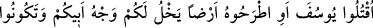

büyük olduğunu anlayamıyorlardı.
Mesnevî’de şöyle denilir:
Ârifin biri, ihtiyar bir papaza sordu
“Sen mi daha yaşlısın, sakalın mı?”
Papaz dedi ki: “Ben ondan önce doğmuşum,
Sakalım yokken dünyayı görmüşüm, nice seneler yaşamışım.”
Ârif dedi ki: “Sakalın ağarmış, eski halini terk etmiş,
Fakat kötü huyun değişmemiş, olduğu gibi duruyor.”
Sakalın senden sonra doğduğu halde, seni geçmiş,
Sen ise tirit sevdasında olduğun yerde kalmışsın.
Sen hâlâ doğduğun renktesin,
O renkten bir adım bile ileriye atamamışsın.
Hâlâ kaptaki ekşi ayransın
Hâlâ o yoğurdun yağını ayıramamışsın.
el-Kevâşî’de şöyle der: “” kelimesinden “” kelimesine kadar vakıf
yoktur. Çünkü burada kardeşlerinin sözleri aktarılmaktadır.” Yani bu sözün başı ile sonu
arasında mânâ yönünden alâka bulunduğu için orada durulmaz. Ancak nefes kesilerek
mecbûr kalınması durumunda, durduğu yerin öncesinden alınarak sözün parçaları yine
birbirine eklenmelidir. Böyle yapılmadığı takdirde günahkâr olunur. el-Cezerî’nin
şerhlerinden birinde de böyle denilmektedir.
9. “Yûsuf’u öldürün ya da onu bir yere atın da babanızın teveccühü yalnız size
kalsın. Ondan sonra da sâlih bir topluluk olursunuz.”
“Yûsuf ’u öldürün” Eğer “Kıskançlık, büyük günahların önde gelenlerindendir.
Özellikle de Yûsuf’un kardeşleri hased yüzünden öldürme ve benzeri fiillere
yönelmişlerdir. Oysa bütün bunlar peygamberliğe ve ismete aykırı şeylerdir.’ Dersen,
şöyle cevap veririm: İsmet; yani günahtan korunmada mûteber olan, peygamberlere
peygamberliğin verildiği zaman mâsum olmalarıdır. Peygamberlik verilmeden önce ise
mâsûm olmaları gerekmez. İmam (Fahreddîn Râzî) de böyle demektedir.
Şerhu’l-Akâid’de şöyle denilir: “Peygamberler peygamberlik verilmeden önce de
sonra da küfürden ve kasden büyük günah işlemekten korunmuşturlar.”
et-Teysîr’de şöyle rivâyet edilir: Şeytan onların bu sözlerini işitince onlara bir ihtiyar